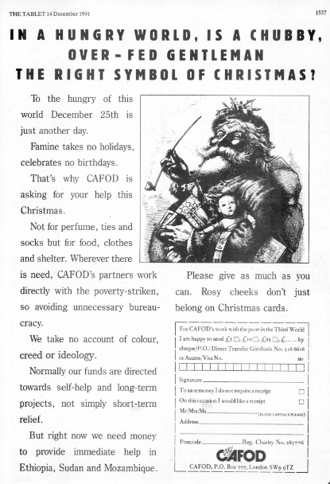
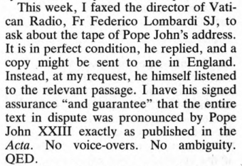
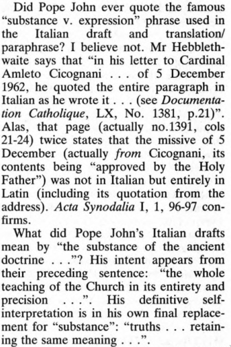
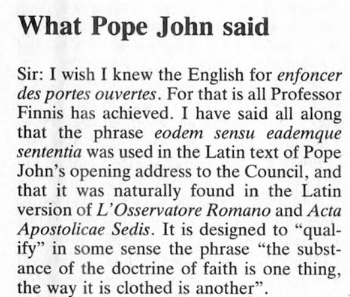
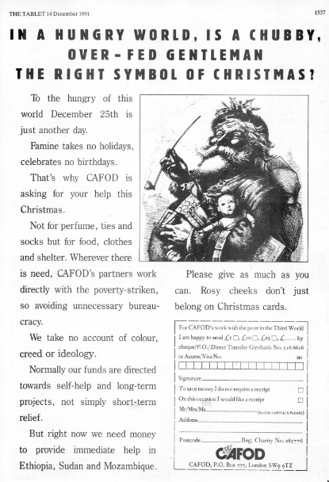
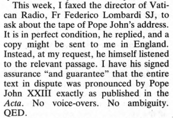
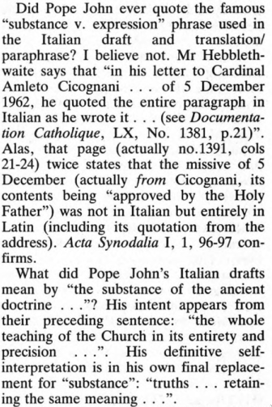
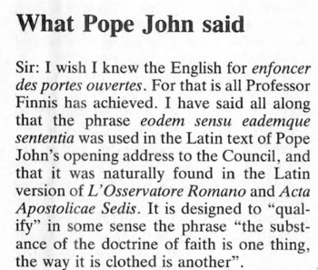

Ecclesiology
What is the Church?
What is the Church?
- Who is in the Church?
- Why are they in the Church?
- What is this Church they're in?
- Who is in the Church?
- Why are they in the Church?
- What is this Church they're in?
Who is in the Church?

- Christening: members of Christ
- Old/New Man
- Incorporated by sacrament
- Trinity
Who is in the Church?
- The Baptised
- How baptised?
- By whom?
- No baptism, no christianity?
- Those who would have been baptised
- Martyrdom
- Desire
- Those who stay...
Why are they in the Church?
- Because they got baptised
- Because Good Catholics got them baptised
- Because Good Catholics got them baptised and Brought Them Up Properly
- Because Good Catholics got them baptised and Brought Them Up Properly, among others similarly baptised and having been so baptised themselves
- Because the Church baptised them
- Because God chose them
- (Mystery of election. We will come back to this.)
Why are they in the Church?
- Because the Church baptised them
- Because God encorporated them into His Church
Why are they in the Church?
- Because the Church baptised them
- Because God encorporated them into His Church
Why are they in the Church?
| God | Church |
|---|---|
| Grace | Sacraments |
| Revelation | Teaching |
| Authority | Hierarchy |
What is this Church they're in?
- A living Church
- A teaching Church
- An hierarchical Church
- A sacramental Church
- A mystical Church
Mystici Corporis

The doctrine of the Mystical Body of Christ, which is the Church, was first taught us by the Redeemer Himself.
In particular those members of the laity who collaborate with the ecclesiastical hierarchy in spreading the Kingdom of the Divine Redeemer occupy an honorable, if often (etiamsi saepenumero) a lowly, place in the Christian community, and even they (ac vel eos) under the impulse of God and with His help, can reach the heights of supreme holiness
Corpus Mysticum

But in order thus to bypass the sociological order and to become in all truth this ‘body of the Church made alive by the Spirit’ the ecclesial body has to become in all reality the body of Christ... Now, the Eucharist is the mystical principle, permanently at work at the heart of Christian society, which gives concrete form to this miracle. It is the universal bond, it is the ever-springing source of life. Nourished by the body and blood of the Saviour, his faithful people thus all ‘drink of the one Spirit, who truly makes them into one single body.’ Literally speaking, therefore, the Eucharist makes the Church.
Getting it wrong

- Church as Institution
- Church as Mystical Communion
- Church as Sacrament
- Church as Herald
- Church as Servant
- Church as Community
Which Church?
Which Church?
- Which Church are you a member of?
Which Church?
- Which Church are you a member of?
- Who celebrates at your Mass?
Which Church?
- Which Church are you a member of?
- Who celebrates at your Mass?
- Bonus question: what's a deacon?
The Church Catholic is:
- A communion of particular churches united by one Faith.
- (And one obedience.)
- (And one universal and particular jurisdiction.)
- (And many patriarchal jurisdictions.)
Catholic Realism
| End | Means |
|---|---|
| A communion of particular churches united by one Faith. |
One obedience. One universal and particular jurisdiction. Many patriarchal jurisdictions. |
Ecclesia Docens
Gaudet Mater Ecclesia
Gaudet Mater Ecclesia quod, singulari Divinae Providentiae munere, optatissimus iam dies illuxit, quo, auspice Deipara Virgine, cuius materna dignitas hodie festo ritu recolitur, hic ad Beati Petri sepulcrum Concilium Oecumenicum Vaticanum Secundum sollemniter initium capit.
Universa Concilia — sive viginti Oecumenica sive innumera eaque non parvi pendenda Provincialia et Regionaliaquae ...
Est enim aliud ipsum depositum Fidei, seu veritates, quae veneranda doctrina nostra continentur, aliud modus, quo eaedem enuntiantur, eodem tamen sensu eademque sententia.
Eodem sensu?
 







The last sentence became, understandably, an object of controversy... There can be no doubt about what Pope John said and meant. The above translation is based on the Latin transcript provided by Vatican Radio... Yet when the Latin version of the inaugural speech appeared in Acta Apostolicæ Sedis... the text had been tampered with and censored. The idea of the 'substance' of faith had vanished, and cautions qualifications were introduced.
Authoritative teaching
- Infallibility
- Of Pope
- Of Councils
- Of Church
- When?
- Auctoritas and Potestas
Whence the Church?

- Israel
- Mary
- Christ!
- Baptism
- Calling Disciples
- Pentecost
Many rays; one sun

- Church as the new order (“for the former things are passed away”)
- Church as the new kingdom
- Church as the End of the World
Midwinter spring is its own season
Sempiternal though sodden towards sundown,
Suspended in time, between pole and tropic.
When the short day is brightest, with frost and fire,
The brief sun flames the ice, on pond and ditches,
In windless cold that is the heart’s heat,
Reflecting in a watery mirror
A glare that is blindness in the early afternoon.
And glow more intense than blaze of branch, or brazier,
Stirs the dumb spirit: no wind, but pentecostal fire
In the dark time of the year. Between melting and freezing
The soul’s sap quivers. There is no earth smell
Or smell of living thing. This is the spring time
But not in time’s covenant. Now the hedgerow
Is blanched for an hour with transitory blossom
Of snow, a bloom more sudden
Than that of summer, neither budding nor fading,
Not in the scheme of generation.
Where is the summer, the unimaginable
Zero summer?
If you came this way,
Taking the route you would be likely to take
From the place you would be likely to come from,
If you came this way in may time, you would find the hedges
White again, in May, with voluptuary sweetness.
It would be the same at the end of the journey,
If you came at night like a broken king,
If you came by day not knowing what you came for,
It would be the same, when you leave the rough road
And turn behind the pig-sty to the dull facade
And the tombstone. And what you thought you came for
Is only a shell, a husk of meaning
From which the purpose breaks only when it is fulfilled
If at all. Either you had no purpose
Or the purpose is beyond the end you figured
And is altered in fulfilment. There are other places
Which also are the world’s end, some at the sea jaws,
Or over a dark lake, in a desert or a city—
But this is the nearest, in place and time,
Now and in England.
If you came this way,
Taking any route, starting from anywhere,
At any time or at any season,
It would always be the same: you would have to put off
Sense and notion. You are not here to verify,
Instruct yourself, or inform curiosity
Or carry report. You are here to kneel
Where prayer has been valid. And prayer is more
Than an order of words, the conscious occupation
Of the praying mind, or the sound of the voice praying.
And what the dead had no speech for, when living,
They can tell you, being dead: the communication
Of the dead is tongued with fire beyond the language of the living.
Here, the intersection of the timeless moment
Is England and nowhere. Never and always.
Ⓒ John Morris 2022
Made with reveal.js.
Source available on github: 2e0byo/systematic-theology.
All images loaded directly from public-domain sources. See source for credits.